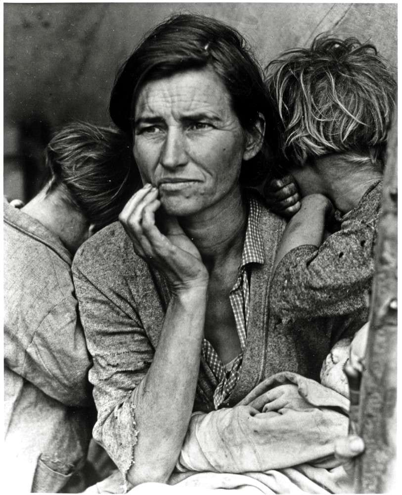

Amerika er ikke et land — det er en strid om, hvad et land kan være. Her er et forsøg på at fortælle den strid i seks epoker: fra de uafhængige koloniers oprør, gennem borgerkrigens åbne sår, ind i den industrielle hvirvelvind, ud over Atlanten og hjem igen, ned i Den Kolde Krigs skygge, og frem til vores egen tid.
Hver epoke har sit eget billede — og sin egen Cash-sang, hvis han skrev en. Stridens lyd, fra det syngende sydstats-bælte.
Et land, der blev til på papir — og prøvede at leve sig op til det.
Da delegationerne forsamlede sig i Philadelphia i juli 1776, var der ingen, der vidste om eksperimentet ville holde et årti. Tretten kolonier, fire millioner mennesker, en ny verden, en gammel kong George — og en erklæring om at alle mennesker er skabt lige, skrevet af en mand, der ejede slaver.
Forfatningen kom elleve år senere, i 1787 — et kompromis sammensyet af gæld, geografi og generationsmod. Washington trådte ind som første præsident i 1789, Jefferson købte Louisiana i 1803, Madison stred sig gennem 1812-krigen, og i 1820'erne begyndte de første spændinger om slaveriet at vise sig som revner i et stadig nyt gulv. Republikken var skabt af det sublime, men holdt sammen af det praktiske.
Han greb ikke tilbage til Founding Fathers. Cash var bjerg, ikke marmor — sangenes Amerika begynder med bomuldsmarken, ikke med blæk på pergament. Men idéen om at en republik må forsvare sit eget løfte mod sig selv — den findes overalt i hans senere sange.
Et land, der ikke kunne tale sig ud af sin egen synd — og betalte for den med sin egen ungdoms blod.
1830'erne åbnede med Indian Removal Act, Jackson på podiet og bomuld som ny konges kappe over Syden. Abolitionister i Boston, opstande i Virginia, Underground Railroad gennem skovene. Hver kompromis — Missouri 1820, Compromise 1850, Kansas-Nebraska 1854 — flyttede bare den uundgåelige time længere ned ad vejen.
Borgerkrigen 1861-65 kostede 750.000 mænd. Lincoln blev mere end en præsident — han blev en epoke. Gettysburg-talen tog republikkens løfte og gjorde det moralsk igen: that this nation, under God, shall have a new birth of freedom. Han nåede ikke at se Reconstruction. Den sluttede dårligt; vi lever stadig i dens efterklang.
Cash holdt aldrig op med at synge om Syden, og han holdt aldrig op med at synge om dem, Syden tabte. John Henry-balladen er sangen om den frigjorte slave, der kæmpede mod maskinen og vandt — og døde. Robert E. Lee-sangen er ærligheden om hvor han kom fra. Det er ikke samme ærinde, men det er samme mand.
Den industrielle revolution kom som en jernbane — og kørte tværs over alt, hvad Amerika havde været.
På fire årtier omskabte jernbanen, telegrafen og fabrikken landet. Carnegie smedede stål, Rockefeller raffinerede olie, Vanderbilt byggede skinner — og dagen, hvor det første tog krydsede kontinentet (Promontory Summit, 1869), kortsluttede en hel epoke. Indianerkrigene endte ved Wounded Knee i 1890. Skellet mellem rige og fattige blev så voldsomt, at Mark Twain gav årtiet et navn: The Gilded Age.
Det var også fagforeningernes første store opvågnen: Haymarket 1886, Pullman 1894, Triangle Shirtwaist 1911. Avisen ovenfor — Seattle, februar 1919 — er en efterskrift, men også arvtager. Det moderne Amerika begynder her, ikke i 1776.
Hammer mod damp; arbejderen mod maskinen. Cash's John Henry er den enkelte mand mod hele den industrielle alder — og han vinder, og taber. “The L&N” er den anden ende af samme jernbane: byen, hvor toget ikke længere standser. To sange, halvtreds år imellem, men samme tematik: den lille mand klemt mellem skinner og kvartalsregnskab.

Et halvt århundrede på tredive år. To verdenskrige med en støvbølge imellem.
USA gik ind i den første krig i 1917 — sent, men afgørende. Wilson håbede at gøre verden “safe for democracy” og kom hjem til en kongres, der ikke ville ratificere fredspagten. 1920'ernes Jazz Age sluttede med Wall Street-krakket i oktober 1929. Dust Bowl tørrede Sydens og Midtvestens marker ud; Dorothea Langes Migrant Mother blev epokens ansigt. Roosevelt kom i 1933 med New Deal, og i Dyess, Arkansas, blev en lille bomuldsbonde ved navn Ray Cash tildelt en 40-acres koloni — og fik en søn, der hed J.R.
Anden Verdenskrig ramte den 7. december 1941. Fire års amerikansk industri på krigsfod producerede flere fly, skibe og jeeps end resten af verden tilsammen. Joe Rosenthals foto fra Iwo Jima i februar 1945 blev republikkens nye selvbillede — fem marinesoldater og en sygehjælper, der rejser et flag på et bjerg, som lige har kostet 7.000 amerikanske liv.
Cash sang om Dyess-oversvømmelsen i 1937 — sin egen barndoms vand. Og han sang om Ira Hayes, Pima-indianeren, der hjalp med at rejse flaget på Iwo Jima og kom hjem til et land, der ikke kunne huske ham. To sange fra denne periode, set indefra. “Whiskey-drinkin' Indian, Marine that went to war,” synger Cash. Det er ikke patriotisme. Det er regnskab.
Den længste fest og den hårdeste kamp om sjælen — alt på samme gade.
Krigen sluttede. Bilen kom. Forstadsstrukturen voksede. Levittown blev tegnet, jernbanen blev erstattet af motorvejen, og Eisenhower-årenes Pax Americana så fra afstand ud som en sejr. Tæt på var det noget andet: McCarthy-tribunalerne, Korea, Vietnam, mordet på Kennedy i 1963, Selma og Civil Rights Act i 1964, Watergate i 1974, hvor en præsident trådte tilbage før han blev fjernet.
Reagan kom i 1981 og fortalte et land, der havde mistet selvtilliden, at "morning in America" var lige om hjørnet. Han skar i skatten, byggede missilarsenaler, talte med Gorbatjov, og hans tid blev senere både kanoniseret og kritiseret. Den endte symbolsk i november 1989, da Berlin-muren faldt — og USA var det eneste, der stod tilbage.
Cash blev manden i sort “for the poor and the beaten down” i 1971 — midt under Vietnam. Tre år senere, året Nixon trådte tilbage, udgav han “Ragged Old Flag” — ikke som propaganda, men som lap-på-lap-poesi om en republik, der har overlevet sin egen ydmygelse. Og i 1985 dannede han Highwaymen med Willie, Waylon og Kristofferson: outlaw-country som modtræk til Reagans glansbillede.
Den eneste supermagt — og den dybeste tvivl. Vi lever stadig inde i denne akt.
Den korte 1990'er-eufori — Clintons år, internettet, balancerede budgetter — endte i røg den 11. september 2001. Krigene i Afghanistan og Irak. Finanskrisen i 2008. Den første sorte præsident, valgt på et løfte om “hope”, fulgt af et land, der valgte næsten det modsatte i 2016. Pandemi. Storming af Kongressen den 6. januar 2021. Og videre.
Det er en epoke uden tydeligt navn endnu. Det er måske det sene Amerika, eller måske bare det Amerika, hvor splittelsen blev synlig nok til at man ikke længere kunne lade som om den ikke var der. Hvad det vil ende i, ved ingen — men det er værd at huske at republikken er ældre end de fleste, og dens vante manøvre er at fejle sig selv frem.
Cash's sidste album udkom i et land der lige havde mistet sin uskyld igen. “There's a man going around, taking names...” — Johannes Åbenbaring sat til guitar, en uge før Irak-krigen. Og “Hurt”: et helt liv pakket ind i fire minutter, og hans egen krop som republikkens spejlbillede. Han døde i 2003. Vi lever stadig i hans efterskrift.
Denne side er ikke historieskrivning. Den er en lytters notesbog — en, der prøver at høre Amerika gennem Cash, og Cash gennem Amerika. Hvis noget her får dig til at læse videre eller skrive til mig, har den gjort sit job.
For dem, der vil dybere ned i de seks epoker, har jeg samlet en læseliste — tre bøger jeg har læst og kan stå inde for, og en længere hylde med titler på vej.